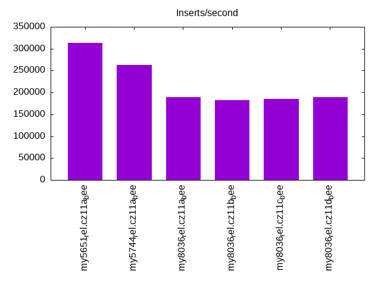
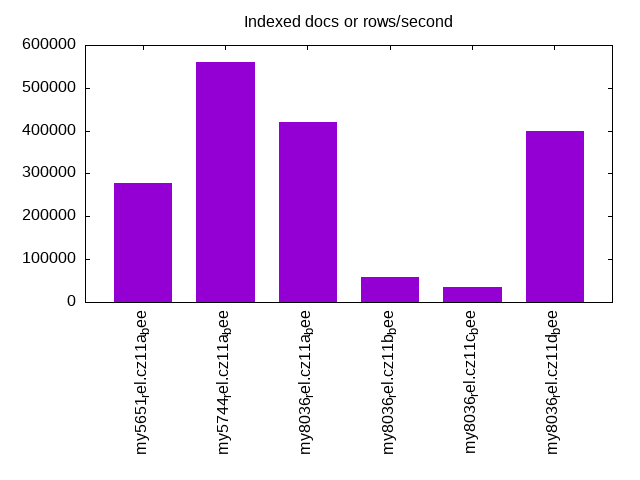
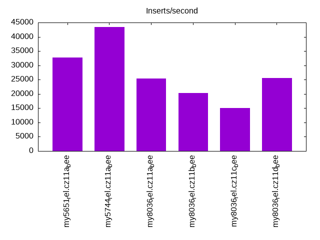
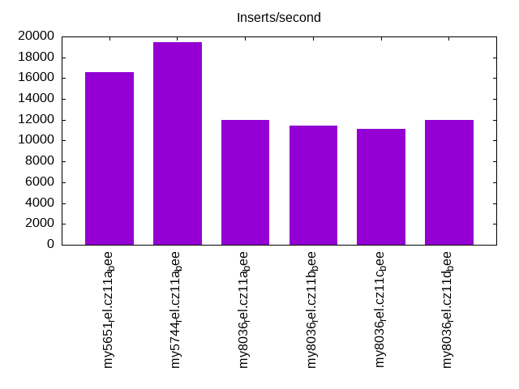
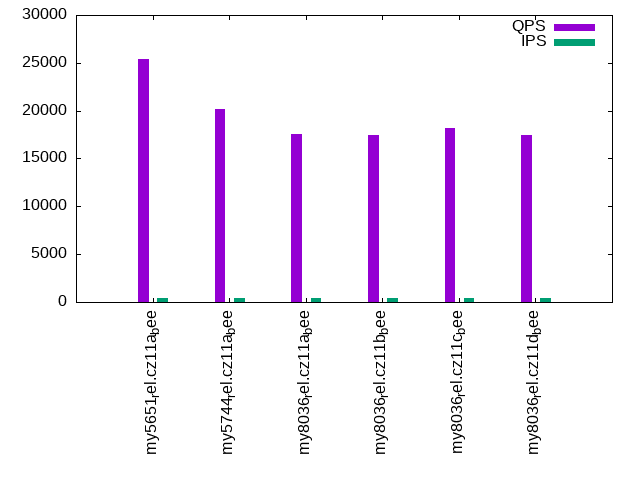
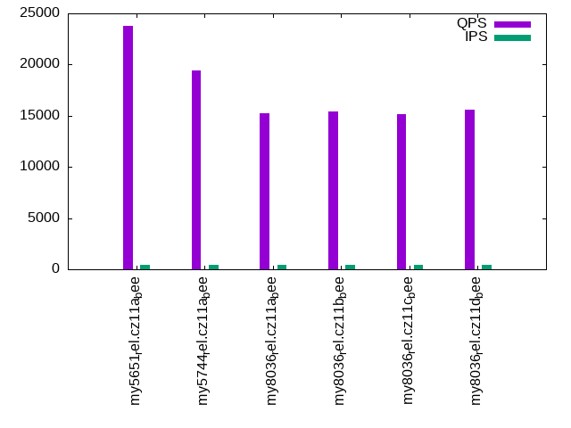
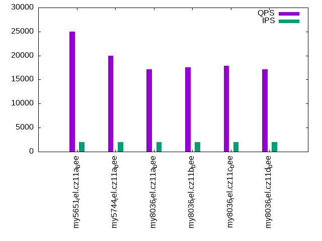
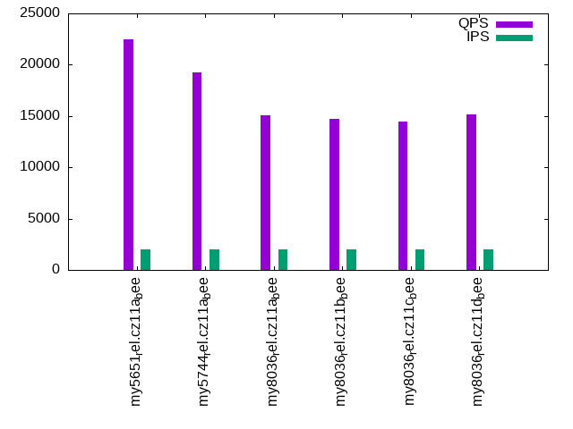
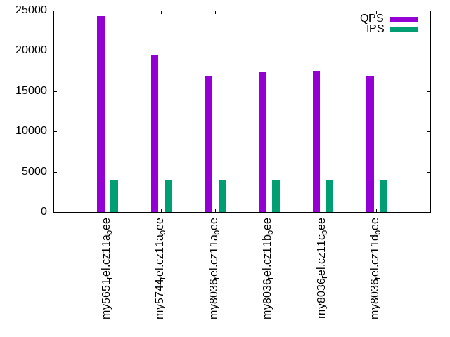
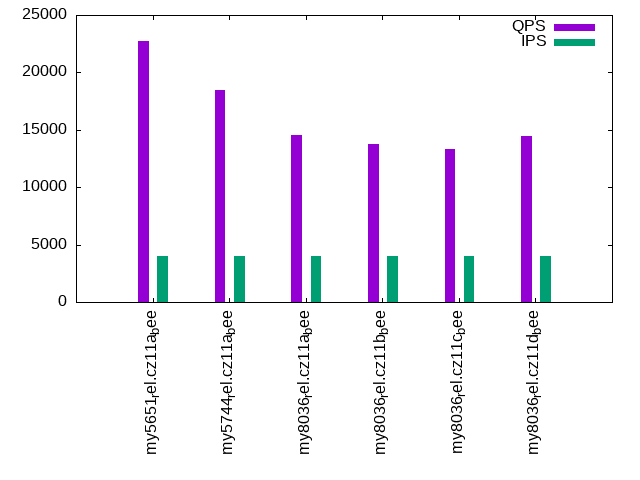

This is a report for the insert benchmark with 32M docs and 4 client(s). It is generated by scripts (bash, awk, sed) and Tufte might not be impressed. An overview of the insert benchmark is here and a short update is here. Below, by DBMS, I mean DBMS+version.config. An example is my8020.c10b40 where my means MySQL, 8020 is version 8.0.20 and c10b40 is the name for the configuration file.
The test server has 8 AMD cores, 16G RAM and an NVMe SSD. It is described here as the Beelink. The benchmark was run with 1 client and there were 1 or 3 connections per client (1 for queries or inserts without rate limits, 1+1 for rate limited inserts+deletes). It uses 1 table. It loads 30M rows per table without secondary indexes, creates 3 secondary indexes per table, then inserts 40m+10m rows per table with a delete per insert to avoid growing the table. It then does 6 read+write tests for 1800s each that do queries as fast as possible with 100,100,500,500,1000,1000 inserts/s and the same for deletes/s per client concurrent with the queries. The database is cached in memory. Clients and the DBMS share one server. The per-database configs are in the per-database subdirectories here.
The tested DBMS are:
The numbers are inserts/s for l.i0, l.i1 and l.i2, indexed docs (or rows) /s for l.x and queries/s for qr100, qp100 thru qr1000, qp1000" The values are the average rate over the entire test for inserts (IPS) and queries (QPS). The range of values for IPS and QPS is split into 3 parts: bottom 25%, middle 50%, top 25%. Values in the bottom 25% have a red background, values in the top 25% have a green background and values in the middle have no color. A gray background is used for values that can be ignored because the DBMS did not sustain the target insert rate. Red backgrounds are not used when the minimum value is within 80% of the max value.
| dbms | l.i0 | l.x | l.i1 | l.i2 | qr100 | qp100 | qr500 | qp500 | qr1000 | qp1000 |
|---|---|---|---|---|---|---|---|---|---|---|
| my5651_rel.cz11a_bee | 313725 | 278262 | 32720 | 16577 | 25385 | 23759 | 25032 | 22473 | 24346 | 22694 |
| my5744_rel.cz11a_bee | 262295 | 561405 | 43396 | 19455 | 20161 | 19410 | 20016 | 19275 | 19462 | 18429 |
| my8036_rel.cz11a_bee | 189349 | 421054 | 25429 | 12001 | 17519 | 15251 | 17092 | 15105 | 16872 | 14562 |
| my8036_rel.cz11b_bee | 182857 | 58608 | 20377 | 11419 | 17494 | 15441 | 17524 | 14684 | 17422 | 13780 |
| my8036_rel.cz11c_bee | 184971 | 34115 | 14981 | 11096 | 18224 | 15200 | 17884 | 14462 | 17538 | 13360 |
| my8036_rel.cz11d_bee | 189349 | 400001 | 25584 | 12023 | 17496 | 15584 | 17152 | 15134 | 16875 | 14476 |
This table has relative throughput, throughput for the DBMS relative to the DBMS in the first line, using the absolute throughput from the previous table. Values less than 0.95 have a yellow background. Values greater than 1.05 have a blue background.
| dbms | l.i0 | l.x | l.i1 | l.i2 | qr100 | qp100 | qr500 | qp500 | qr1000 | qp1000 |
|---|---|---|---|---|---|---|---|---|---|---|
| my5651_rel.cz11a_bee | 1.00 | 1.00 | 1.00 | 1.00 | 1.00 | 1.00 | 1.00 | 1.00 | 1.00 | 1.00 |
| my5744_rel.cz11a_bee | 0.84 | 2.02 | 1.33 | 1.17 | 0.79 | 0.82 | 0.80 | 0.86 | 0.80 | 0.81 |
| my8036_rel.cz11a_bee | 0.60 | 1.51 | 0.78 | 0.72 | 0.69 | 0.64 | 0.68 | 0.67 | 0.69 | 0.64 |
| my8036_rel.cz11b_bee | 0.58 | 0.21 | 0.62 | 0.69 | 0.69 | 0.65 | 0.70 | 0.65 | 0.72 | 0.61 |
| my8036_rel.cz11c_bee | 0.59 | 0.12 | 0.46 | 0.67 | 0.72 | 0.64 | 0.71 | 0.64 | 0.72 | 0.59 |
| my8036_rel.cz11d_bee | 0.60 | 1.44 | 0.78 | 0.73 | 0.69 | 0.66 | 0.69 | 0.67 | 0.69 | 0.64 |
This lists the average rate of inserts/s for the tests that do inserts concurrent with queries. For such tests the query rate is listed in the table above. The read+write tests are setup so that the insert rate should match the target rate every second. Cells that are not at least 95% of the target have a red background to indicate a failure to satisfy the target.
| dbms | qr100.L1 | qp100.L2 | qr500.L3 | qp500.L4 | qr1000.L5 | qp1000.L6 |
|---|---|---|---|---|---|---|
| my5651_rel.cz11a_bee | 399 | 399 | 1993 | 1994 | 3989 | 3987 |
| my5744_rel.cz11a_bee | 399 | 399 | 1994 | 1994 | 3989 | 3989 |
| my8036_rel.cz11a_bee | 399 | 399 | 1993 | 1993 | 3989 | 3989 |
| my8036_rel.cz11b_bee | 399 | 399 | 1994 | 1994 | 3987 | 3989 |
| my8036_rel.cz11c_bee | 399 | 399 | 1994 | 1994 | 3989 | 3989 |
| my8036_rel.cz11d_bee | 399 | 399 | 1994 | 1994 | 3989 | 3989 |
| target | 400 | 400 | 2000 | 2000 | 4000 | 4000 |
l.i0: load without secondary indexes. Graphs for performance per 1-second interval are here.
Average throughput:
Insert response time histogram: each cell has the percentage of responses that take <= the time in the header and max is the max response time in seconds. For the max column values in the top 25% of the range have a red background and in the bottom 25% of the range have a green background. The red background is not used when the min value is within 80% of the max value.
| dbms | 256us | 1ms | 4ms | 16ms | 64ms | 256ms | 1s | 4s | 16s | gt | max |
|---|---|---|---|---|---|---|---|---|---|---|---|
| my5651_rel.cz11a_bee | 60.494 | 39.257 | 0.135 | 0.107 | 0.006 | 0.169 | |||||
| my5744_rel.cz11a_bee | 0.289 | 99.199 | 0.391 | 0.115 | 0.006 | 0.173 | |||||
| my8036_rel.cz11a_bee | 99.246 | 0.613 | 0.130 | 0.012 | 0.151 | ||||||
| my8036_rel.cz11b_bee | 98.876 | 0.985 | 0.105 | 0.034 | 0.165 | ||||||
| my8036_rel.cz11c_bee | 98.977 | 0.861 | 0.146 | 0.017 | 0.175 | ||||||
| my8036_rel.cz11d_bee | 99.229 | 0.645 | 0.115 | 0.011 | 0.157 |
Performance metrics for the DBMS listed above. Some are normalized by throughput, others are not. Legend for results is here.
ips qps rps rmbps wps wmbps rpq rkbpq wpi wkbpi csps cpups cspq cpupq dbgb1 dbgb2 rss maxop p50 p99 tag 313725 0 99 0.4 820.5 91.1 0.000 0.001 0.003 0.297 31203 75.3 0.099 19 2.1 17.6 2.6 0.169 92030 75217 my5651_rel.cz11a_bee 262295 0 0 0.0 720.9 76.3 0.000 0.000 0.003 0.298 27796 69.7 0.106 21 2.1 17.7 3.0 0.173 74919 51843 my5744_rel.cz11a_bee 189349 0 0 0.0 783.5 62.1 0.000 0.000 0.004 0.336 22535 70.7 0.119 30 2.1 17.7 3.0 0.151 51344 41255 my8036_rel.cz11a_bee 182857 0 0 0.0 913.5 59.1 0.000 0.000 0.005 0.331 21225 69.8 0.116 31 2.1 17.7 3.0 0.165 50447 36061 my8036_rel.cz11b_bee 184971 0 0 0.0 586.7 56.1 0.000 0.000 0.003 0.311 20793 69.9 0.112 30 2.1 17.7 3.0 0.175 50745 34563 my8036_rel.cz11c_bee 189349 0 0 0.0 785.0 62.2 0.000 0.000 0.004 0.336 22374 71.0 0.118 30 2.1 17.7 3.0 0.157 51644 43652 my8036_rel.cz11d_bee
l.x: create secondary indexes.
Average throughput:
Performance metrics for the DBMS listed above. Some are normalized by throughput, others are not. Legend for results is here.
ips qps rps rmbps wps wmbps rpq rkbpq wpi wkbpi csps cpups cspq cpupq dbgb1 dbgb2 rss maxop p50 p99 tag 278262 0 0 0.0 2438.3 260.0 0.000 0.000 0.009 0.957 6583 39.1 0.024 11 4.5 20.0 4.5 0.002 NA NA my5651_rel.cz11a_bee 561405 0 0 0.0 6160.0 483.3 0.000 0.000 0.011 0.882 31387 45.2 0.056 6 4.9 20.4 3.2 0.002 NA NA my5744_rel.cz11a_bee 421054 0 2186 136.2 8559.0 427.2 0.005 0.331 0.020 1.039 25790 89.3 0.061 17 4.9 20.4 3.9 0.004 NA NA my8036_rel.cz11a_bee 58608 0 301 18.8 1604.5 61.8 0.005 0.328 0.027 1.080 13149 20.6 0.224 28 4.9 20.4 5.7 0.009 NA NA my8036_rel.cz11b_bee 34115 0 175 10.9 1091.6 36.7 0.005 0.328 0.032 1.103 12002 15.2 0.352 36 4.9 20.4 5.7 0.006 NA NA my8036_rel.cz11c_bee 400001 0 2055 127.9 8285.8 405.1 0.005 0.327 0.021 1.037 24713 89.4 0.062 18 4.9 20.4 3.4 0.007 NA NA my8036_rel.cz11d_bee
l.i1: continue load after secondary indexes created with 50 inserts per transaction. Graphs for performance per 1-second interval are here.
Average throughput:
Insert response time histogram: each cell has the percentage of responses that take <= the time in the header and max is the max response time in seconds. For the max column values in the top 25% of the range have a red background and in the bottom 25% of the range have a green background. The red background is not used when the min value is within 80% of the max value.
| dbms | 256us | 1ms | 4ms | 16ms | 64ms | 256ms | 1s | 4s | 16s | gt | max |
|---|---|---|---|---|---|---|---|---|---|---|---|
| my5651_rel.cz11a_bee | 39.432 | 57.402 | 3.158 | 0.009 | 0.131 | ||||||
| my5744_rel.cz11a_bee | 59.486 | 39.700 | 0.807 | 0.008 | 0.155 | ||||||
| my8036_rel.cz11a_bee | 55.537 | 40.393 | 0.927 | 3.142 | 0.255 | ||||||
| my8036_rel.cz11b_bee | 57.684 | 37.090 | 1.973 | 3.094 | 0.095 | 0.061 | 0.001 | 0.001 | 30.175 | ||
| my8036_rel.cz11c_bee | 61.403 | 32.586 | 2.305 | 2.984 | 0.594 | 0.128 | 0.001 | 52.888 | |||
| my8036_rel.cz11d_bee | 55.878 | 40.169 | 0.821 | 3.132 | 0.227 |
Delete response time histogram: each cell has the percentage of responses that take <= the time in the header and max is the max response time in seconds. For the max column values in the top 25% of the range have a red background and in the bottom 25% of the range have a green background. The red background is not used when the min value is within 80% of the max value.
| dbms | 256us | 1ms | 4ms | 16ms | 64ms | 256ms | 1s | 4s | 16s | gt | max |
|---|---|---|---|---|---|---|---|---|---|---|---|
| my5651_rel.cz11a_bee | 55.950 | 41.811 | 2.232 | 0.007 | 0.141 | ||||||
| my5744_rel.cz11a_bee | 63.085 | 36.320 | 0.588 | 0.007 | 0.155 | ||||||
| my8036_rel.cz11a_bee | 63.931 | 32.348 | 0.726 | 2.995 | 0.216 | ||||||
| my8036_rel.cz11b_bee | 67.395 | 28.024 | 1.552 | 2.885 | 0.086 | 0.056 | 0.001 | 0.001 | 30.167 | ||
| my8036_rel.cz11c_bee | 70.947 | 23.831 | 1.825 | 2.740 | 0.542 | 0.114 | nonzero | 0.001 | 52.887 | ||
| my8036_rel.cz11d_bee | 64.394 | 31.988 | 0.642 | 2.976 | 0.214 |
Performance metrics for the DBMS listed above. Some are normalized by throughput, others are not. Legend for results is here.
ips qps rps rmbps wps wmbps rpq rkbpq wpi wkbpi csps cpups cspq cpupq dbgb1 dbgb2 rss maxop p50 p99 tag 32720 0 876 3.4 2814.6 120.1 0.027 0.107 0.086 3.758 29971 68.3 0.916 167 7.2 22.7 8.1 0.131 8191 6643 my5651_rel.cz11a_bee 43396 0 0 0.0 3674.4 155.7 0.000 0.000 0.085 3.674 24605 83.9 0.567 155 7.6 23.1 8.8 0.155 10888 9090 my5744_rel.cz11a_bee 25429 0 25 0.4 3283.1 120.2 0.001 0.015 0.129 4.840 21116 54.5 0.830 171 6.4 22.0 7.5 0.255 6341 3645 my8036_rel.cz11a_bee 20377 0 20 0.3 1119.5 50.7 0.001 0.015 0.055 2.546 16852 45.9 0.827 180 6.4 22.0 7.6 30.175 5596 0 my8036_rel.cz11b_bee 14981 0 3 0.1 880.9 36.8 0.000 0.009 0.059 2.517 17657 37.1 1.179 198 6.4 22.0 6.8 52.888 3496 0 my8036_rel.cz11c_bee 25584 0 25 0.4 3301.0 121.0 0.001 0.015 0.129 4.842 21217 54.5 0.829 170 6.4 22.0 7.6 0.227 6343 3499 my8036_rel.cz11d_bee
l.i2: continue load after secondary indexes created with 5 inserts per transaction. Graphs for performance per 1-second interval are here.
Average throughput:
Insert response time histogram: each cell has the percentage of responses that take <= the time in the header and max is the max response time in seconds. For the max column values in the top 25% of the range have a red background and in the bottom 25% of the range have a green background. The red background is not used when the min value is within 80% of the max value.
| dbms | 256us | 1ms | 4ms | 16ms | 64ms | 256ms | 1s | 4s | 16s | gt | max |
|---|---|---|---|---|---|---|---|---|---|---|---|
| my5651_rel.cz11a_bee | 0.070 | 67.806 | 29.847 | 2.148 | 0.129 | 0.001 | 0.124 | ||||
| my5744_rel.cz11a_bee | 0.001 | 74.357 | 24.157 | 1.475 | 0.009 | 0.001 | 0.086 | ||||
| my8036_rel.cz11a_bee | 64.766 | 33.169 | 1.550 | 0.016 | 0.498 | 0.133 | |||||
| my8036_rel.cz11b_bee | 62.915 | 34.569 | 1.898 | 0.138 | 0.479 | 0.169 | |||||
| my8036_rel.cz11c_bee | 67.131 | 30.299 | 1.694 | 0.398 | 0.477 | nonzero | 0.001 | nonzero | nonzero | 21.851 | |
| my8036_rel.cz11d_bee | 64.799 | 33.156 | 1.530 | 0.016 | 0.500 | 0.130 |
Delete response time histogram: each cell has the percentage of responses that take <= the time in the header and max is the max response time in seconds. For the max column values in the top 25% of the range have a red background and in the bottom 25% of the range have a green background. The red background is not used when the min value is within 80% of the max value.
| dbms | 256us | 1ms | 4ms | 16ms | 64ms | 256ms | 1s | 4s | 16s | gt | max |
|---|---|---|---|---|---|---|---|---|---|---|---|
| my5651_rel.cz11a_bee | 0.127 | 67.421 | 30.164 | 2.159 | 0.129 | 0.001 | 0.124 | ||||
| my5744_rel.cz11a_bee | 0.002 | 74.267 | 24.230 | 1.491 | 0.009 | 0.001 | 0.085 | ||||
| my8036_rel.cz11a_bee | 65.220 | 32.713 | 1.555 | 0.015 | 0.498 | 0.132 | |||||
| my8036_rel.cz11b_bee | 63.406 | 34.079 | 1.901 | 0.136 | 0.478 | 0.174 | |||||
| my8036_rel.cz11c_bee | 67.628 | 29.809 | 1.694 | 0.395 | 0.474 | nonzero | 0.001 | nonzero | nonzero | 21.850 | |
| my8036_rel.cz11d_bee | 65.279 | 32.671 | 1.536 | 0.016 | 0.499 | 0.138 |
Performance metrics for the DBMS listed above. Some are normalized by throughput, others are not. Legend for results is here.
ips qps rps rmbps wps wmbps rpq rkbpq wpi wkbpi csps cpups cspq cpupq dbgb1 dbgb2 rss maxop p50 p99 tag 16577 0 2761 10.8 1762.9 71.8 0.167 0.666 0.106 4.433 63889 73.8 3.854 356 7.2 22.7 8.1 0.124 4145 3566 my5651_rel.cz11a_bee 19455 0 0 0.0 2033.7 83.8 0.000 0.000 0.105 4.413 62521 77.1 3.214 317 7.6 23.1 8.8 0.086 4854 4345 my5744_rel.cz11a_bee 12001 0 0 0.0 1835.3 63.6 0.000 0.000 0.153 5.429 45020 55.4 3.751 369 6.4 22.0 7.6 0.133 3001 1869 my8036_rel.cz11a_bee 11419 0 0 0.0 769.6 30.4 0.000 0.000 0.067 2.724 40710 53.3 3.565 373 6.4 22.0 7.6 0.169 2852 1798 my8036_rel.cz11b_bee 11096 0 0 0.0 656.6 27.1 0.000 0.000 0.059 2.501 42667 55.3 3.845 399 6.4 22.0 6.8 21.851 2782 644 my8036_rel.cz11c_bee 12023 0 0 0.0 1776.6 62.2 0.000 0.000 0.148 5.297 44918 55.4 3.736 369 6.4 22.0 7.6 0.130 2986 1837 my8036_rel.cz11d_bee
qr100.L1: range queries with 100 insert/s per client. Graphs for performance per 1-second interval are here.
Average throughput:
Query response time histogram: each cell has the percentage of responses that take <= the time in the header and max is the max response time in seconds. For max values in the top 25% of the range have a red background and in the bottom 25% of the range have a green background. The red background is not used when the min value is within 80% of the max value.
| dbms | 256us | 1ms | 4ms | 16ms | 64ms | 256ms | 1s | 4s | 16s | gt | max |
|---|---|---|---|---|---|---|---|---|---|---|---|
| my5651_rel.cz11a_bee | 98.368 | 1.596 | 0.026 | 0.010 | nonzero | 0.021 | |||||
| my5744_rel.cz11a_bee | 89.758 | 10.232 | 0.009 | 0.001 | 0.012 | ||||||
| my8036_rel.cz11a_bee | 78.884 | 21.108 | 0.006 | 0.001 | 0.012 | ||||||
| my8036_rel.cz11b_bee | 78.578 | 21.413 | 0.007 | 0.002 | nonzero | 0.045 | |||||
| my8036_rel.cz11c_bee | 83.595 | 16.395 | 0.007 | 0.003 | nonzero | nonzero | 0.145 | ||||
| my8036_rel.cz11d_bee | 78.578 | 21.414 | 0.007 | 0.001 | 0.013 |
Insert response time histogram: each cell has the percentage of responses that take <= the time in the header and max is the max response time in seconds. For max values in the top 25% of the range have a red background and in the bottom 25% of the range have a green background. The red background is not used when the min value is within 80% of the max value.
| dbms | 256us | 1ms | 4ms | 16ms | 64ms | 256ms | 1s | 4s | 16s | gt | max |
|---|---|---|---|---|---|---|---|---|---|---|---|
| my5651_rel.cz11a_bee | 84.229 | 15.542 | 0.229 | 0.037 | |||||||
| my5744_rel.cz11a_bee | 98.403 | 1.562 | 0.035 | 0.020 | |||||||
| my8036_rel.cz11a_bee | 96.826 | 3.160 | 0.014 | 0.026 | |||||||
| my8036_rel.cz11b_bee | 94.625 | 5.083 | 0.215 | 0.076 | 0.102 | ||||||
| my8036_rel.cz11c_bee | 93.875 | 5.431 | 0.479 | 0.215 | 0.204 | ||||||
| my8036_rel.cz11d_bee | 92.882 | 7.062 | 0.007 | 0.049 | 0.104 |
Delete response time histogram: each cell has the percentage of responses that take <= the time in the header and max is the max response time in seconds. For max values in the top 25% of the range have a red background and in the bottom 25% of the range have a green background. The red background is not used when the min value is within 80% of the max value.
| dbms | 256us | 1ms | 4ms | 16ms | 64ms | 256ms | 1s | 4s | 16s | gt | max |
|---|---|---|---|---|---|---|---|---|---|---|---|
| my5651_rel.cz11a_bee | 85.611 | 14.215 | 0.174 | 0.032 | |||||||
| my5744_rel.cz11a_bee | 98.604 | 1.389 | 0.007 | 0.017 | |||||||
| my8036_rel.cz11a_bee | 96.993 | 2.993 | 0.014 | 0.037 | |||||||
| my8036_rel.cz11b_bee | 95.312 | 4.472 | 0.125 | 0.090 | 0.104 | ||||||
| my8036_rel.cz11c_bee | 95.062 | 4.326 | 0.431 | 0.181 | 0.164 | ||||||
| my8036_rel.cz11d_bee | 94.625 | 5.333 | 0.007 | 0.035 | 0.103 |
Performance metrics for the DBMS listed above. Some are normalized by throughput, others are not. Legend for results is here.
ips qps rps rmbps wps wmbps rpq rkbpq wpi wkbpi csps cpups cspq cpupq dbgb1 dbgb2 rss maxop p50 p99 tag 399 25385 14 0.1 348.8 10.9 0.001 0.002 0.875 27.937 97440 50.4 3.839 159 7.2 22.7 8.1 0.021 6361 5786 my5651_rel.cz11a_bee 399 20161 0 0.0 467.7 14.4 0.000 0.000 1.173 36.977 78143 51.4 3.876 204 7.6 23.1 8.8 0.012 5034 4332 my5744_rel.cz11a_bee 399 17519 0 0.0 528.2 13.6 0.000 0.000 1.324 34.977 68313 51.1 3.899 233 6.4 22.0 7.6 0.012 4331 3612 my8036_rel.cz11a_bee 399 17494 0 0.0 212.0 4.1 0.000 0.000 0.532 10.529 67566 51.4 3.862 235 6.4 22.0 7.6 0.045 4459 3534 my8036_rel.cz11b_bee 399 18224 0 0.0 247.4 4.2 0.000 0.000 0.620 10.860 69987 52.4 3.840 230 6.4 22.0 6.9 0.145 4613 3676 my8036_rel.cz11c_bee 399 17496 0 0.0 485.1 12.5 0.000 0.000 1.216 32.214 68145 51.2 3.895 234 6.4 22.0 7.6 0.013 4267 3548 my8036_rel.cz11d_bee
qp100.L2: point queries with 100 insert/s per client. Graphs for performance per 1-second interval are here.
Average throughput:
Query response time histogram: each cell has the percentage of responses that take <= the time in the header and max is the max response time in seconds. For max values in the top 25% of the range have a red background and in the bottom 25% of the range have a green background. The red background is not used when the min value is within 80% of the max value.
| dbms | 256us | 1ms | 4ms | 16ms | 64ms | 256ms | 1s | 4s | 16s | gt | max |
|---|---|---|---|---|---|---|---|---|---|---|---|
| my5651_rel.cz11a_bee | 98.739 | 1.192 | 0.058 | 0.012 | 0.012 | ||||||
| my5744_rel.cz11a_bee | 95.942 | 4.015 | 0.038 | 0.005 | 0.012 | ||||||
| my8036_rel.cz11a_bee | 80.253 | 19.730 | 0.014 | 0.003 | 0.010 | ||||||
| my8036_rel.cz11b_bee | 84.283 | 15.695 | 0.017 | 0.004 | 0.012 | ||||||
| my8036_rel.cz11c_bee | 78.259 | 21.720 | 0.016 | 0.005 | 0.015 | ||||||
| my8036_rel.cz11d_bee | 85.570 | 14.413 | 0.014 | 0.003 | 0.012 |
Insert response time histogram: each cell has the percentage of responses that take <= the time in the header and max is the max response time in seconds. For max values in the top 25% of the range have a red background and in the bottom 25% of the range have a green background. The red background is not used when the min value is within 80% of the max value.
| dbms | 256us | 1ms | 4ms | 16ms | 64ms | 256ms | 1s | 4s | 16s | gt | max |
|---|---|---|---|---|---|---|---|---|---|---|---|
| my5651_rel.cz11a_bee | 86.701 | 13.174 | 0.125 | 0.023 | |||||||
| my5744_rel.cz11a_bee | 98.944 | 1.049 | 0.007 | 0.016 | |||||||
| my8036_rel.cz11a_bee | 96.236 | 3.681 | 0.021 | 0.062 | 0.106 | ||||||
| my8036_rel.cz11b_bee | 96.667 | 3.271 | 0.062 | 0.042 | |||||||
| my8036_rel.cz11c_bee | 95.493 | 4.174 | 0.264 | 0.069 | 0.123 | ||||||
| my8036_rel.cz11d_bee | 96.493 | 3.479 | 0.021 | 0.007 | 0.102 |
Delete response time histogram: each cell has the percentage of responses that take <= the time in the header and max is the max response time in seconds. For max values in the top 25% of the range have a red background and in the bottom 25% of the range have a green background. The red background is not used when the min value is within 80% of the max value.
| dbms | 256us | 1ms | 4ms | 16ms | 64ms | 256ms | 1s | 4s | 16s | gt | max |
|---|---|---|---|---|---|---|---|---|---|---|---|
| my5651_rel.cz11a_bee | 87.660 | 12.299 | 0.042 | 0.022 | |||||||
| my5744_rel.cz11a_bee | 99.021 | 0.965 | 0.014 | 0.020 | |||||||
| my8036_rel.cz11a_bee | 96.500 | 3.438 | 0.014 | 0.049 | 0.103 | ||||||
| my8036_rel.cz11b_bee | 96.389 | 3.542 | 0.069 | 0.048 | |||||||
| my8036_rel.cz11c_bee | 95.701 | 4.069 | 0.174 | 0.056 | 0.102 | ||||||
| my8036_rel.cz11d_bee | 96.458 | 3.528 | 0.007 | 0.007 | 0.102 |
Performance metrics for the DBMS listed above. Some are normalized by throughput, others are not. Legend for results is here.
ips qps rps rmbps wps wmbps rpq rkbpq wpi wkbpi csps cpups cspq cpupq dbgb1 dbgb2 rss maxop p50 p99 tag 399 23759 14 0.1 2.2 0.4 0.001 0.002 0.005 1.087 93639 49.4 3.941 166 7.2 22.7 8.1 0.012 6089 4813 my5651_rel.cz11a_bee 399 19410 0 0.0 39.4 1.4 0.000 0.000 0.099 3.661 76196 50.3 3.926 207 7.6 23.1 8.8 0.012 4891 4123 my5744_rel.cz11a_bee 399 15251 0 0.0 67.4 2.1 0.000 0.000 0.169 5.481 59346 50.3 3.891 264 6.4 22.1 7.6 0.010 3901 3356 my8036_rel.cz11a_bee 399 15441 0 0.0 150.2 3.3 0.000 0.000 0.377 8.443 61754 51.0 3.999 264 6.4 22.1 7.6 0.012 3900 3436 my8036_rel.cz11b_bee 399 15200 0 0.0 180.3 3.4 0.000 0.000 0.452 8.757 60092 51.8 3.953 273 6.4 22.1 6.9 0.015 3852 3372 my8036_rel.cz11c_bee 399 15584 0 0.0 71.9 2.2 0.000 0.000 0.180 5.760 61752 50.4 3.962 259 6.4 22.1 7.6 0.012 3944 3420 my8036_rel.cz11d_bee
qr500.L3: range queries with 500 insert/s per client. Graphs for performance per 1-second interval are here.
Average throughput:
Query response time histogram: each cell has the percentage of responses that take <= the time in the header and max is the max response time in seconds. For max values in the top 25% of the range have a red background and in the bottom 25% of the range have a green background. The red background is not used when the min value is within 80% of the max value.
| dbms | 256us | 1ms | 4ms | 16ms | 64ms | 256ms | 1s | 4s | 16s | gt | max |
|---|---|---|---|---|---|---|---|---|---|---|---|
| my5651_rel.cz11a_bee | 98.236 | 1.660 | 0.089 | 0.014 | nonzero | 0.037 | |||||
| my5744_rel.cz11a_bee | 90.342 | 9.631 | 0.020 | 0.007 | nonzero | 0.026 | |||||
| my8036_rel.cz11a_bee | 77.985 | 21.983 | 0.021 | 0.011 | nonzero | 0.030 | |||||
| my8036_rel.cz11b_bee | 81.320 | 18.629 | 0.035 | 0.016 | 0.001 | nonzero | 0.093 | ||||
| my8036_rel.cz11c_bee | 85.556 | 14.390 | 0.034 | 0.019 | 0.001 | nonzero | 0.102 | ||||
| my8036_rel.cz11d_bee | 78.135 | 21.833 | 0.022 | 0.010 | nonzero | 0.041 |
Insert response time histogram: each cell has the percentage of responses that take <= the time in the header and max is the max response time in seconds. For max values in the top 25% of the range have a red background and in the bottom 25% of the range have a green background. The red background is not used when the min value is within 80% of the max value.
| dbms | 256us | 1ms | 4ms | 16ms | 64ms | 256ms | 1s | 4s | 16s | gt | max |
|---|---|---|---|---|---|---|---|---|---|---|---|
| my5651_rel.cz11a_bee | 67.400 | 31.524 | 1.076 | 0.059 | |||||||
| my5744_rel.cz11a_bee | 94.901 | 4.810 | 0.289 | 0.064 | |||||||
| my8036_rel.cz11a_bee | 86.285 | 12.310 | 1.051 | 0.354 | 0.131 | ||||||
| my8036_rel.cz11b_bee | 87.268 | 11.322 | 1.161 | 0.249 | 0.124 | ||||||
| my8036_rel.cz11c_bee | 81.035 | 15.851 | 2.506 | 0.608 | 0.166 | ||||||
| my8036_rel.cz11d_bee | 85.592 | 13.061 | 1.075 | 0.272 | 0.129 |
Delete response time histogram: each cell has the percentage of responses that take <= the time in the header and max is the max response time in seconds. For max values in the top 25% of the range have a red background and in the bottom 25% of the range have a green background. The red background is not used when the min value is within 80% of the max value.
| dbms | 256us | 1ms | 4ms | 16ms | 64ms | 256ms | 1s | 4s | 16s | gt | max |
|---|---|---|---|---|---|---|---|---|---|---|---|
| my5651_rel.cz11a_bee | 76.469 | 22.818 | 0.713 | 0.049 | |||||||
| my5744_rel.cz11a_bee | 96.256 | 3.547 | 0.197 | 0.062 | |||||||
| my8036_rel.cz11a_bee | 89.608 | 9.412 | 0.667 | 0.312 | 0.124 | ||||||
| my8036_rel.cz11b_bee | 90.022 | 8.812 | 0.935 | 0.231 | 0.117 | ||||||
| my8036_rel.cz11c_bee | 85.599 | 12.028 | 1.835 | 0.539 | 0.184 | ||||||
| my8036_rel.cz11d_bee | 89.040 | 10.035 | 0.676 | 0.249 | 0.126 |
Performance metrics for the DBMS listed above. Some are normalized by throughput, others are not. Legend for results is here.
ips qps rps rmbps wps wmbps rpq rkbpq wpi wkbpi csps cpups cspq cpupq dbgb1 dbgb2 rss maxop p50 p99 tag 1993 25032 62 0.2 697.1 22.9 0.002 0.010 0.350 11.775 95269 52.9 3.806 169 7.2 22.7 8.1 0.037 6249 5626 my5651_rel.cz11a_bee 1994 20016 0 0.0 282.3 10.4 0.000 0.000 0.142 5.328 75169 53.6 3.755 214 7.6 23.1 8.8 0.026 4957 4285 my5744_rel.cz11a_bee 1993 17092 0 0.0 421.4 13.0 0.000 0.000 0.211 6.662 65399 53.4 3.826 250 6.4 22.1 7.6 0.030 4315 3550 my8036_rel.cz11a_bee 1994 17524 0 0.0 508.0 12.0 0.000 0.000 0.255 6.146 67449 55.5 3.849 253 6.4 22.1 7.6 0.093 4475 3628 my8036_rel.cz11b_bee 1994 17884 0 0.0 585.3 12.0 0.000 0.000 0.293 6.155 69173 57.9 3.868 259 6.4 22.1 6.9 0.102 4573 3662 my8036_rel.cz11c_bee 1994 17152 0 0.0 414.4 12.8 0.000 0.000 0.208 6.549 65770 53.5 3.835 250 6.4 22.1 7.6 0.041 4331 3580 my8036_rel.cz11d_bee
qp500.L4: point queries with 500 insert/s per client. Graphs for performance per 1-second interval are here.
Average throughput:
Query response time histogram: each cell has the percentage of responses that take <= the time in the header and max is the max response time in seconds. For max values in the top 25% of the range have a red background and in the bottom 25% of the range have a green background. The red background is not used when the min value is within 80% of the max value.
| dbms | 256us | 1ms | 4ms | 16ms | 64ms | 256ms | 1s | 4s | 16s | gt | max |
|---|---|---|---|---|---|---|---|---|---|---|---|
| my5651_rel.cz11a_bee | 97.465 | 2.282 | 0.235 | 0.019 | nonzero | 0.017 | |||||
| my5744_rel.cz11a_bee | 94.989 | 4.900 | 0.094 | 0.017 | nonzero | 0.027 | |||||
| my8036_rel.cz11a_bee | 80.278 | 19.676 | 0.034 | 0.012 | nonzero | 0.028 | |||||
| my8036_rel.cz11b_bee | 73.325 | 26.608 | 0.047 | 0.020 | nonzero | 0.042 | |||||
| my8036_rel.cz11c_bee | 66.119 | 33.808 | 0.050 | 0.023 | 0.001 | 0.054 | |||||
| my8036_rel.cz11d_bee | 79.685 | 20.266 | 0.035 | 0.013 | 0.001 | 0.029 |
Insert response time histogram: each cell has the percentage of responses that take <= the time in the header and max is the max response time in seconds. For max values in the top 25% of the range have a red background and in the bottom 25% of the range have a green background. The red background is not used when the min value is within 80% of the max value.
| dbms | 256us | 1ms | 4ms | 16ms | 64ms | 256ms | 1s | 4s | 16s | gt | max |
|---|---|---|---|---|---|---|---|---|---|---|---|
| my5651_rel.cz11a_bee | 76.542 | 23.081 | 0.378 | 0.049 | |||||||
| my5744_rel.cz11a_bee | 98.069 | 1.889 | 0.042 | 0.048 | |||||||
| my8036_rel.cz11a_bee | 91.044 | 8.249 | 0.532 | 0.175 | 0.123 | ||||||
| my8036_rel.cz11b_bee | 88.122 | 10.312 | 1.296 | 0.269 | 0.125 | ||||||
| my8036_rel.cz11c_bee | 78.003 | 18.632 | 2.690 | 0.675 | 0.163 | ||||||
| my8036_rel.cz11d_bee | 90.943 | 8.138 | 0.633 | 0.286 | 0.125 |
Delete response time histogram: each cell has the percentage of responses that take <= the time in the header and max is the max response time in seconds. For max values in the top 25% of the range have a red background and in the bottom 25% of the range have a green background. The red background is not used when the min value is within 80% of the max value.
| dbms | 256us | 1ms | 4ms | 16ms | 64ms | 256ms | 1s | 4s | 16s | gt | max |
|---|---|---|---|---|---|---|---|---|---|---|---|
| my5651_rel.cz11a_bee | 83.628 | 16.118 | 0.254 | 0.047 | |||||||
| my5744_rel.cz11a_bee | 98.776 | 1.201 | 0.022 | 0.048 | |||||||
| my8036_rel.cz11a_bee | 92.862 | 6.606 | 0.374 | 0.158 | 0.121 | ||||||
| my8036_rel.cz11b_bee | 90.943 | 7.918 | 0.907 | 0.232 | 0.156 | ||||||
| my8036_rel.cz11c_bee | 83.147 | 14.258 | 2.019 | 0.575 | 0.158 | ||||||
| my8036_rel.cz11d_bee | 93.299 | 6.078 | 0.378 | 0.246 | 0.125 |
Performance metrics for the DBMS listed above. Some are normalized by throughput, others are not. Legend for results is here.
ips qps rps rmbps wps wmbps rpq rkbpq wpi wkbpi csps cpups cspq cpupq dbgb1 dbgb2 rss maxop p50 p99 tag 1994 22473 63 0.2 540.2 18.2 0.003 0.011 0.271 9.344 89973 51.1 4.004 182 7.2 22.7 8.1 0.017 5674 4699 my5651_rel.cz11a_bee 1994 19275 0 0.0 262.0 9.8 0.000 0.000 0.131 5.015 76572 52.2 3.973 217 7.6 23.1 8.8 0.027 4891 4046 my5744_rel.cz11a_bee 1993 15105 0 0.0 408.4 12.7 0.000 0.000 0.205 6.507 60736 53.1 4.021 281 6.4 22.1 7.6 0.028 3819 3374 my8036_rel.cz11a_bee 1994 14684 0 0.0 542.8 12.6 0.000 0.000 0.272 6.487 59490 55.3 4.051 301 6.4 22.1 7.6 0.042 3700 3276 my8036_rel.cz11b_bee 1994 14462 0 0.0 620.0 12.6 0.000 0.000 0.311 6.457 59914 58.2 4.143 322 6.4 22.1 6.9 0.054 3628 3117 my8036_rel.cz11c_bee 1994 15134 0 0.0 400.6 12.5 0.000 0.000 0.201 6.408 60329 53.0 3.986 280 6.4 22.1 7.6 0.029 3836 3358 my8036_rel.cz11d_bee
qr1000.L5: range queries with 1000 insert/s per client. Graphs for performance per 1-second interval are here.
Average throughput:
Query response time histogram: each cell has the percentage of responses that take <= the time in the header and max is the max response time in seconds. For max values in the top 25% of the range have a red background and in the bottom 25% of the range have a green background. The red background is not used when the min value is within 80% of the max value.
| dbms | 256us | 1ms | 4ms | 16ms | 64ms | 256ms | 1s | 4s | 16s | gt | max |
|---|---|---|---|---|---|---|---|---|---|---|---|
| my5651_rel.cz11a_bee | 97.842 | 1.957 | 0.173 | 0.027 | 0.001 | 0.058 | |||||
| my5744_rel.cz11a_bee | 90.014 | 9.905 | 0.062 | 0.019 | 0.001 | 0.046 | |||||
| my8036_rel.cz11a_bee | 79.093 | 20.800 | 0.074 | 0.031 | 0.003 | 0.048 | |||||
| my8036_rel.cz11b_bee | 85.119 | 14.727 | 0.102 | 0.048 | 0.003 | nonzero | 0.083 | ||||
| my8036_rel.cz11c_bee | 87.959 | 11.910 | 0.086 | 0.041 | 0.004 | nonzero | 0.117 | ||||
| my8036_rel.cz11d_bee | 79.016 | 20.879 | 0.074 | 0.029 | 0.002 | 0.052 |
Insert response time histogram: each cell has the percentage of responses that take <= the time in the header and max is the max response time in seconds. For max values in the top 25% of the range have a red background and in the bottom 25% of the range have a green background. The red background is not used when the min value is within 80% of the max value.
| dbms | 256us | 1ms | 4ms | 16ms | 64ms | 256ms | 1s | 4s | 16s | gt | max |
|---|---|---|---|---|---|---|---|---|---|---|---|
| my5651_rel.cz11a_bee | 44.122 | 52.656 | 3.222 | 0.059 | |||||||
| my5744_rel.cz11a_bee | 73.409 | 24.966 | 1.624 | 0.001 | 0.067 | ||||||
| my8036_rel.cz11a_bee | 64.655 | 30.896 | 3.487 | 0.963 | 0.148 | ||||||
| my8036_rel.cz11b_bee | 62.992 | 30.940 | 5.075 | 0.993 | 0.189 | ||||||
| my8036_rel.cz11c_bee | 63.365 | 30.023 | 5.299 | 1.313 | 0.241 | ||||||
| my8036_rel.cz11d_bee | 68.292 | 27.570 | 3.252 | 0.886 | 0.152 |
Delete response time histogram: each cell has the percentage of responses that take <= the time in the header and max is the max response time in seconds. For max values in the top 25% of the range have a red background and in the bottom 25% of the range have a green background. The red background is not used when the min value is within 80% of the max value.
| dbms | 256us | 1ms | 4ms | 16ms | 64ms | 256ms | 1s | 4s | 16s | gt | max |
|---|---|---|---|---|---|---|---|---|---|---|---|
| my5651_rel.cz11a_bee | 0.001 | 53.565 | 44.135 | 2.300 | 0.057 | ||||||
| my5744_rel.cz11a_bee | 78.606 | 19.983 | 1.411 | 0.053 | |||||||
| my8036_rel.cz11a_bee | 71.585 | 24.879 | 2.667 | 0.869 | 0.138 | ||||||
| my8036_rel.cz11b_bee | 70.851 | 24.447 | 3.823 | 0.879 | 0.194 | ||||||
| my8036_rel.cz11c_bee | 71.294 | 23.676 | 3.908 | 1.122 | 0.210 | ||||||
| my8036_rel.cz11d_bee | 75.481 | 21.357 | 2.397 | 0.765 | 0.137 |
Performance metrics for the DBMS listed above. Some are normalized by throughput, others are not. Legend for results is here.
ips qps rps rmbps wps wmbps rpq rkbpq wpi wkbpi csps cpups cspq cpupq dbgb1 dbgb2 rss maxop p50 p99 tag 3989 24346 114 0.4 750.2 26.5 0.005 0.019 0.188 6.790 91301 55.4 3.750 182 7.2 22.7 8.1 0.058 6025 5418 my5651_rel.cz11a_bee 3989 19462 0 0.0 541.4 20.2 0.000 0.000 0.136 5.180 71655 56.5 3.682 232 7.6 23.1 8.8 0.046 4893 4141 my5744_rel.cz11a_bee 3989 16872 0 0.0 796.8 24.9 0.000 0.000 0.200 6.384 64385 56.4 3.816 267 6.4 22.1 7.6 0.048 4299 3564 my8036_rel.cz11a_bee 3987 17422 0 0.0 1111.1 25.2 0.000 0.000 0.279 6.462 67731 60.7 3.888 279 6.4 22.1 7.6 0.083 4413 3644 my8036_rel.cz11b_bee 3989 17538 0 0.0 1013.5 21.3 0.000 0.000 0.254 5.458 68662 63.6 3.915 290 6.4 22.1 6.9 0.117 4427 3772 my8036_rel.cz11c_bee 3989 16875 0 0.0 799.7 24.9 0.000 0.000 0.200 6.403 64621 56.4 3.829 267 6.4 22.1 7.6 0.052 4251 3518 my8036_rel.cz11d_bee
qp1000.L6: point queries with 1000 insert/s per client. Graphs for performance per 1-second interval are here.
Average throughput:
Query response time histogram: each cell has the percentage of responses that take <= the time in the header and max is the max response time in seconds. For max values in the top 25% of the range have a red background and in the bottom 25% of the range have a green background. The red background is not used when the min value is within 80% of the max value.
| dbms | 256us | 1ms | 4ms | 16ms | 64ms | 256ms | 1s | 4s | 16s | gt | max |
|---|---|---|---|---|---|---|---|---|---|---|---|
| my5651_rel.cz11a_bee | 96.994 | 2.622 | 0.354 | 0.030 | nonzero | 0.028 | |||||
| my5744_rel.cz11a_bee | 92.653 | 7.086 | 0.218 | 0.042 | 0.001 | 0.037 | |||||
| my8036_rel.cz11a_bee | 75.304 | 24.560 | 0.103 | 0.032 | 0.002 | 0.052 | |||||
| my8036_rel.cz11b_bee | 61.063 | 38.736 | 0.144 | 0.056 | 0.002 | 0.051 | |||||
| my8036_rel.cz11c_bee | 48.259 | 51.552 | 0.137 | 0.050 | 0.002 | nonzero | 0.143 | ||||
| my8036_rel.cz11d_bee | 73.825 | 26.003 | 0.127 | 0.041 | 0.004 | 0.047 |
Insert response time histogram: each cell has the percentage of responses that take <= the time in the header and max is the max response time in seconds. For max values in the top 25% of the range have a red background and in the bottom 25% of the range have a green background. The red background is not used when the min value is within 80% of the max value.
| dbms | 256us | 1ms | 4ms | 16ms | 64ms | 256ms | 1s | 4s | 16s | gt | max |
|---|---|---|---|---|---|---|---|---|---|---|---|
| my5651_rel.cz11a_bee | 52.681 | 46.067 | 1.251 | 0.001 | 0.069 | ||||||
| my5744_rel.cz11a_bee | 77.252 | 22.062 | 0.685 | 0.051 | |||||||
| my8036_rel.cz11a_bee | 71.709 | 24.872 | 2.551 | 0.868 | 0.143 | ||||||
| my8036_rel.cz11b_bee | 64.085 | 29.413 | 5.333 | 1.169 | 0.158 | ||||||
| my8036_rel.cz11c_bee | 63.131 | 30.015 | 5.455 | 1.399 | 0.202 | ||||||
| my8036_rel.cz11d_bee | 63.250 | 31.788 | 3.765 | 1.198 | 0.151 |
Delete response time histogram: each cell has the percentage of responses that take <= the time in the header and max is the max response time in seconds. For max values in the top 25% of the range have a red background and in the bottom 25% of the range have a green background. The red background is not used when the min value is within 80% of the max value.
| dbms | 256us | 1ms | 4ms | 16ms | 64ms | 256ms | 1s | 4s | 16s | gt | max |
|---|---|---|---|---|---|---|---|---|---|---|---|
| my5651_rel.cz11a_bee | 62.965 | 36.124 | 0.911 | 0.055 | |||||||
| my5744_rel.cz11a_bee | 82.297 | 17.112 | 0.591 | 0.057 | |||||||
| my8036_rel.cz11a_bee | 76.862 | 20.558 | 1.820 | 0.760 | 0.141 | ||||||
| my8036_rel.cz11b_bee | 71.583 | 23.385 | 4.029 | 1.003 | 0.172 | ||||||
| my8036_rel.cz11c_bee | 70.720 | 23.931 | 4.147 | 1.202 | 0.197 | ||||||
| my8036_rel.cz11d_bee | 70.278 | 25.790 | 2.854 | 1.078 | 0.143 |
Performance metrics for the DBMS listed above. Some are normalized by throughput, others are not. Legend for results is here.
ips qps rps rmbps wps wmbps rpq rkbpq wpi wkbpi csps cpups cspq cpupq dbgb1 dbgb2 rss maxop p50 p99 tag 3987 22694 121 0.5 653.2 23.5 0.005 0.021 0.164 6.046 92226 53.7 4.064 189 7.2 22.7 8.1 0.028 5721 4955 my5651_rel.cz11a_bee 3989 18429 0 0.0 540.2 20.1 0.000 0.000 0.135 5.172 74083 54.3 4.020 236 7.6 23.1 8.8 0.037 4667 3869 my5744_rel.cz11a_bee 3989 14562 0 0.0 795.2 24.8 0.000 0.000 0.199 6.372 59289 56.1 4.071 308 6.4 22.2 7.6 0.052 3660 3292 my8036_rel.cz11a_bee 3989 13780 0 0.0 1099.6 25.0 0.000 0.000 0.276 6.406 57443 60.4 4.169 351 6.4 22.2 7.6 0.051 3452 3117 my8036_rel.cz11b_bee 3989 13360 0 0.0 998.4 21.0 0.000 0.000 0.250 5.402 56876 63.4 4.257 380 6.4 22.2 6.9 0.143 3340 2972 my8036_rel.cz11c_bee 3989 14476 0 0.0 799.9 24.9 0.000 0.000 0.201 6.404 57958 55.7 4.004 308 6.4 22.2 7.6 0.047 3660 3228 my8036_rel.cz11d_bee
l.i0: load without secondary indexes
Performance metrics for all DBMS, not just the ones listed above. Some are normalized by throughput, others are not. Legend for results is here.
ips qps rps rmbps wps wmbps rpq rkbpq wpi wkbpi csps cpups cspq cpupq dbgb1 dbgb2 rss maxop p50 p99 tag 313725 0 99 0.4 820.5 91.1 0.000 0.001 0.003 0.297 31203 75.3 0.099 19 2.1 17.6 2.6 0.169 92030 75217 my5651_rel.cz11a_bee 262295 0 0 0.0 720.9 76.3 0.000 0.000 0.003 0.298 27796 69.7 0.106 21 2.1 17.7 3.0 0.173 74919 51843 my5744_rel.cz11a_bee 189349 0 0 0.0 783.5 62.1 0.000 0.000 0.004 0.336 22535 70.7 0.119 30 2.1 17.7 3.0 0.151 51344 41255 my8036_rel.cz11a_bee 182857 0 0 0.0 913.5 59.1 0.000 0.000 0.005 0.331 21225 69.8 0.116 31 2.1 17.7 3.0 0.165 50447 36061 my8036_rel.cz11b_bee 184971 0 0 0.0 586.7 56.1 0.000 0.000 0.003 0.311 20793 69.9 0.112 30 2.1 17.7 3.0 0.175 50745 34563 my8036_rel.cz11c_bee 189349 0 0 0.0 785.0 62.2 0.000 0.000 0.004 0.336 22374 71.0 0.118 30 2.1 17.7 3.0 0.157 51644 43652 my8036_rel.cz11d_bee
l.x: create secondary indexes
Performance metrics for all DBMS, not just the ones listed above. Some are normalized by throughput, others are not. Legend for results is here.
ips qps rps rmbps wps wmbps rpq rkbpq wpi wkbpi csps cpups cspq cpupq dbgb1 dbgb2 rss maxop p50 p99 tag 278262 0 0 0.0 2438.3 260.0 0.000 0.000 0.009 0.957 6583 39.1 0.024 11 4.5 20.0 4.5 0.002 NA NA my5651_rel.cz11a_bee 561405 0 0 0.0 6160.0 483.3 0.000 0.000 0.011 0.882 31387 45.2 0.056 6 4.9 20.4 3.2 0.002 NA NA my5744_rel.cz11a_bee 421054 0 2186 136.2 8559.0 427.2 0.005 0.331 0.020 1.039 25790 89.3 0.061 17 4.9 20.4 3.9 0.004 NA NA my8036_rel.cz11a_bee 58608 0 301 18.8 1604.5 61.8 0.005 0.328 0.027 1.080 13149 20.6 0.224 28 4.9 20.4 5.7 0.009 NA NA my8036_rel.cz11b_bee 34115 0 175 10.9 1091.6 36.7 0.005 0.328 0.032 1.103 12002 15.2 0.352 36 4.9 20.4 5.7 0.006 NA NA my8036_rel.cz11c_bee 400001 0 2055 127.9 8285.8 405.1 0.005 0.327 0.021 1.037 24713 89.4 0.062 18 4.9 20.4 3.4 0.007 NA NA my8036_rel.cz11d_bee
l.i1: continue load after secondary indexes created with 50 inserts per transaction
Performance metrics for all DBMS, not just the ones listed above. Some are normalized by throughput, others are not. Legend for results is here.
ips qps rps rmbps wps wmbps rpq rkbpq wpi wkbpi csps cpups cspq cpupq dbgb1 dbgb2 rss maxop p50 p99 tag 32720 0 876 3.4 2814.6 120.1 0.027 0.107 0.086 3.758 29971 68.3 0.916 167 7.2 22.7 8.1 0.131 8191 6643 my5651_rel.cz11a_bee 43396 0 0 0.0 3674.4 155.7 0.000 0.000 0.085 3.674 24605 83.9 0.567 155 7.6 23.1 8.8 0.155 10888 9090 my5744_rel.cz11a_bee 25429 0 25 0.4 3283.1 120.2 0.001 0.015 0.129 4.840 21116 54.5 0.830 171 6.4 22.0 7.5 0.255 6341 3645 my8036_rel.cz11a_bee 20377 0 20 0.3 1119.5 50.7 0.001 0.015 0.055 2.546 16852 45.9 0.827 180 6.4 22.0 7.6 30.175 5596 0 my8036_rel.cz11b_bee 14981 0 3 0.1 880.9 36.8 0.000 0.009 0.059 2.517 17657 37.1 1.179 198 6.4 22.0 6.8 52.888 3496 0 my8036_rel.cz11c_bee 25584 0 25 0.4 3301.0 121.0 0.001 0.015 0.129 4.842 21217 54.5 0.829 170 6.4 22.0 7.6 0.227 6343 3499 my8036_rel.cz11d_bee
l.i2: continue load after secondary indexes created with 5 inserts per transaction
Performance metrics for all DBMS, not just the ones listed above. Some are normalized by throughput, others are not. Legend for results is here.
ips qps rps rmbps wps wmbps rpq rkbpq wpi wkbpi csps cpups cspq cpupq dbgb1 dbgb2 rss maxop p50 p99 tag 16577 0 2761 10.8 1762.9 71.8 0.167 0.666 0.106 4.433 63889 73.8 3.854 356 7.2 22.7 8.1 0.124 4145 3566 my5651_rel.cz11a_bee 19455 0 0 0.0 2033.7 83.8 0.000 0.000 0.105 4.413 62521 77.1 3.214 317 7.6 23.1 8.8 0.086 4854 4345 my5744_rel.cz11a_bee 12001 0 0 0.0 1835.3 63.6 0.000 0.000 0.153 5.429 45020 55.4 3.751 369 6.4 22.0 7.6 0.133 3001 1869 my8036_rel.cz11a_bee 11419 0 0 0.0 769.6 30.4 0.000 0.000 0.067 2.724 40710 53.3 3.565 373 6.4 22.0 7.6 0.169 2852 1798 my8036_rel.cz11b_bee 11096 0 0 0.0 656.6 27.1 0.000 0.000 0.059 2.501 42667 55.3 3.845 399 6.4 22.0 6.8 21.851 2782 644 my8036_rel.cz11c_bee 12023 0 0 0.0 1776.6 62.2 0.000 0.000 0.148 5.297 44918 55.4 3.736 369 6.4 22.0 7.6 0.130 2986 1837 my8036_rel.cz11d_bee
qr100.L1: range queries with 100 insert/s per client
Performance metrics for all DBMS, not just the ones listed above. Some are normalized by throughput, others are not. Legend for results is here.
ips qps rps rmbps wps wmbps rpq rkbpq wpi wkbpi csps cpups cspq cpupq dbgb1 dbgb2 rss maxop p50 p99 tag 399 25385 14 0.1 348.8 10.9 0.001 0.002 0.875 27.937 97440 50.4 3.839 159 7.2 22.7 8.1 0.021 6361 5786 my5651_rel.cz11a_bee 399 20161 0 0.0 467.7 14.4 0.000 0.000 1.173 36.977 78143 51.4 3.876 204 7.6 23.1 8.8 0.012 5034 4332 my5744_rel.cz11a_bee 399 17519 0 0.0 528.2 13.6 0.000 0.000 1.324 34.977 68313 51.1 3.899 233 6.4 22.0 7.6 0.012 4331 3612 my8036_rel.cz11a_bee 399 17494 0 0.0 212.0 4.1 0.000 0.000 0.532 10.529 67566 51.4 3.862 235 6.4 22.0 7.6 0.045 4459 3534 my8036_rel.cz11b_bee 399 18224 0 0.0 247.4 4.2 0.000 0.000 0.620 10.860 69987 52.4 3.840 230 6.4 22.0 6.9 0.145 4613 3676 my8036_rel.cz11c_bee 399 17496 0 0.0 485.1 12.5 0.000 0.000 1.216 32.214 68145 51.2 3.895 234 6.4 22.0 7.6 0.013 4267 3548 my8036_rel.cz11d_bee
qp100.L2: point queries with 100 insert/s per client
Performance metrics for all DBMS, not just the ones listed above. Some are normalized by throughput, others are not. Legend for results is here.
ips qps rps rmbps wps wmbps rpq rkbpq wpi wkbpi csps cpups cspq cpupq dbgb1 dbgb2 rss maxop p50 p99 tag 399 23759 14 0.1 2.2 0.4 0.001 0.002 0.005 1.087 93639 49.4 3.941 166 7.2 22.7 8.1 0.012 6089 4813 my5651_rel.cz11a_bee 399 19410 0 0.0 39.4 1.4 0.000 0.000 0.099 3.661 76196 50.3 3.926 207 7.6 23.1 8.8 0.012 4891 4123 my5744_rel.cz11a_bee 399 15251 0 0.0 67.4 2.1 0.000 0.000 0.169 5.481 59346 50.3 3.891 264 6.4 22.1 7.6 0.010 3901 3356 my8036_rel.cz11a_bee 399 15441 0 0.0 150.2 3.3 0.000 0.000 0.377 8.443 61754 51.0 3.999 264 6.4 22.1 7.6 0.012 3900 3436 my8036_rel.cz11b_bee 399 15200 0 0.0 180.3 3.4 0.000 0.000 0.452 8.757 60092 51.8 3.953 273 6.4 22.1 6.9 0.015 3852 3372 my8036_rel.cz11c_bee 399 15584 0 0.0 71.9 2.2 0.000 0.000 0.180 5.760 61752 50.4 3.962 259 6.4 22.1 7.6 0.012 3944 3420 my8036_rel.cz11d_bee
qr500.L3: range queries with 500 insert/s per client
Performance metrics for all DBMS, not just the ones listed above. Some are normalized by throughput, others are not. Legend for results is here.
ips qps rps rmbps wps wmbps rpq rkbpq wpi wkbpi csps cpups cspq cpupq dbgb1 dbgb2 rss maxop p50 p99 tag 1993 25032 62 0.2 697.1 22.9 0.002 0.010 0.350 11.775 95269 52.9 3.806 169 7.2 22.7 8.1 0.037 6249 5626 my5651_rel.cz11a_bee 1994 20016 0 0.0 282.3 10.4 0.000 0.000 0.142 5.328 75169 53.6 3.755 214 7.6 23.1 8.8 0.026 4957 4285 my5744_rel.cz11a_bee 1993 17092 0 0.0 421.4 13.0 0.000 0.000 0.211 6.662 65399 53.4 3.826 250 6.4 22.1 7.6 0.030 4315 3550 my8036_rel.cz11a_bee 1994 17524 0 0.0 508.0 12.0 0.000 0.000 0.255 6.146 67449 55.5 3.849 253 6.4 22.1 7.6 0.093 4475 3628 my8036_rel.cz11b_bee 1994 17884 0 0.0 585.3 12.0 0.000 0.000 0.293 6.155 69173 57.9 3.868 259 6.4 22.1 6.9 0.102 4573 3662 my8036_rel.cz11c_bee 1994 17152 0 0.0 414.4 12.8 0.000 0.000 0.208 6.549 65770 53.5 3.835 250 6.4 22.1 7.6 0.041 4331 3580 my8036_rel.cz11d_bee
qp500.L4: point queries with 500 insert/s per client
Performance metrics for all DBMS, not just the ones listed above. Some are normalized by throughput, others are not. Legend for results is here.
ips qps rps rmbps wps wmbps rpq rkbpq wpi wkbpi csps cpups cspq cpupq dbgb1 dbgb2 rss maxop p50 p99 tag 1994 22473 63 0.2 540.2 18.2 0.003 0.011 0.271 9.344 89973 51.1 4.004 182 7.2 22.7 8.1 0.017 5674 4699 my5651_rel.cz11a_bee 1994 19275 0 0.0 262.0 9.8 0.000 0.000 0.131 5.015 76572 52.2 3.973 217 7.6 23.1 8.8 0.027 4891 4046 my5744_rel.cz11a_bee 1993 15105 0 0.0 408.4 12.7 0.000 0.000 0.205 6.507 60736 53.1 4.021 281 6.4 22.1 7.6 0.028 3819 3374 my8036_rel.cz11a_bee 1994 14684 0 0.0 542.8 12.6 0.000 0.000 0.272 6.487 59490 55.3 4.051 301 6.4 22.1 7.6 0.042 3700 3276 my8036_rel.cz11b_bee 1994 14462 0 0.0 620.0 12.6 0.000 0.000 0.311 6.457 59914 58.2 4.143 322 6.4 22.1 6.9 0.054 3628 3117 my8036_rel.cz11c_bee 1994 15134 0 0.0 400.6 12.5 0.000 0.000 0.201 6.408 60329 53.0 3.986 280 6.4 22.1 7.6 0.029 3836 3358 my8036_rel.cz11d_bee
qr1000.L5: range queries with 1000 insert/s per client
Performance metrics for all DBMS, not just the ones listed above. Some are normalized by throughput, others are not. Legend for results is here.
ips qps rps rmbps wps wmbps rpq rkbpq wpi wkbpi csps cpups cspq cpupq dbgb1 dbgb2 rss maxop p50 p99 tag 3989 24346 114 0.4 750.2 26.5 0.005 0.019 0.188 6.790 91301 55.4 3.750 182 7.2 22.7 8.1 0.058 6025 5418 my5651_rel.cz11a_bee 3989 19462 0 0.0 541.4 20.2 0.000 0.000 0.136 5.180 71655 56.5 3.682 232 7.6 23.1 8.8 0.046 4893 4141 my5744_rel.cz11a_bee 3989 16872 0 0.0 796.8 24.9 0.000 0.000 0.200 6.384 64385 56.4 3.816 267 6.4 22.1 7.6 0.048 4299 3564 my8036_rel.cz11a_bee 3987 17422 0 0.0 1111.1 25.2 0.000 0.000 0.279 6.462 67731 60.7 3.888 279 6.4 22.1 7.6 0.083 4413 3644 my8036_rel.cz11b_bee 3989 17538 0 0.0 1013.5 21.3 0.000 0.000 0.254 5.458 68662 63.6 3.915 290 6.4 22.1 6.9 0.117 4427 3772 my8036_rel.cz11c_bee 3989 16875 0 0.0 799.7 24.9 0.000 0.000 0.200 6.403 64621 56.4 3.829 267 6.4 22.1 7.6 0.052 4251 3518 my8036_rel.cz11d_bee
qp1000.L6: point queries with 1000 insert/s per client
Performance metrics for all DBMS, not just the ones listed above. Some are normalized by throughput, others are not. Legend for results is here.
ips qps rps rmbps wps wmbps rpq rkbpq wpi wkbpi csps cpups cspq cpupq dbgb1 dbgb2 rss maxop p50 p99 tag 3987 22694 121 0.5 653.2 23.5 0.005 0.021 0.164 6.046 92226 53.7 4.064 189 7.2 22.7 8.1 0.028 5721 4955 my5651_rel.cz11a_bee 3989 18429 0 0.0 540.2 20.1 0.000 0.000 0.135 5.172 74083 54.3 4.020 236 7.6 23.1 8.8 0.037 4667 3869 my5744_rel.cz11a_bee 3989 14562 0 0.0 795.2 24.8 0.000 0.000 0.199 6.372 59289 56.1 4.071 308 6.4 22.2 7.6 0.052 3660 3292 my8036_rel.cz11a_bee 3989 13780 0 0.0 1099.6 25.0 0.000 0.000 0.276 6.406 57443 60.4 4.169 351 6.4 22.2 7.6 0.051 3452 3117 my8036_rel.cz11b_bee 3989 13360 0 0.0 998.4 21.0 0.000 0.000 0.250 5.402 56876 63.4 4.257 380 6.4 22.2 6.9 0.143 3340 2972 my8036_rel.cz11c_bee 3989 14476 0 0.0 799.9 24.9 0.000 0.000 0.201 6.404 57958 55.7 4.004 308 6.4 22.2 7.6 0.047 3660 3228 my8036_rel.cz11d_bee
Insert response time histogram
256us 1ms 4ms 16ms 64ms 256ms 1s 4s 16s gt max tag 0.000 60.494 39.257 0.135 0.107 0.006 0.000 0.000 0.000 0.000 0.169 my5651_rel.cz11a_bee 0.000 0.289 99.199 0.391 0.115 0.006 0.000 0.000 0.000 0.000 0.173 my5744_rel.cz11a_bee 0.000 0.000 99.246 0.613 0.130 0.012 0.000 0.000 0.000 0.000 0.151 my8036_rel.cz11a_bee 0.000 0.000 98.876 0.985 0.105 0.034 0.000 0.000 0.000 0.000 0.165 my8036_rel.cz11b_bee 0.000 0.000 98.977 0.861 0.146 0.017 0.000 0.000 0.000 0.000 0.175 my8036_rel.cz11c_bee 0.000 0.000 99.229 0.645 0.115 0.011 0.000 0.000 0.000 0.000 0.157 my8036_rel.cz11d_bee
TODO - determine whether there is data for create index response time
Insert response time histogram
256us 1ms 4ms 16ms 64ms 256ms 1s 4s 16s gt max tag 0.000 0.000 39.432 57.402 3.158 0.009 0.000 0.000 0.000 0.000 0.131 my5651_rel.cz11a_bee 0.000 0.000 59.486 39.700 0.807 0.008 0.000 0.000 0.000 0.000 0.155 my5744_rel.cz11a_bee 0.000 0.000 55.537 40.393 0.927 3.142 0.000 0.000 0.000 0.000 0.255 my8036_rel.cz11a_bee 0.000 0.000 57.684 37.090 1.973 3.094 0.095 0.061 0.001 0.001 30.175 my8036_rel.cz11b_bee 0.000 0.000 61.403 32.586 2.305 2.984 0.594 0.128 0.000 0.001 52.888 my8036_rel.cz11c_bee 0.000 0.000 55.878 40.169 0.821 3.132 0.000 0.000 0.000 0.000 0.227 my8036_rel.cz11d_bee
Delete response time histogram
256us 1ms 4ms 16ms 64ms 256ms 1s 4s 16s gt max tag 0.000 0.000 55.950 41.811 2.232 0.007 0.000 0.000 0.000 0.000 0.141 my5651_rel.cz11a_bee 0.000 0.000 63.085 36.320 0.588 0.007 0.000 0.000 0.000 0.000 0.155 my5744_rel.cz11a_bee 0.000 0.000 63.931 32.348 0.726 2.995 0.000 0.000 0.000 0.000 0.216 my8036_rel.cz11a_bee 0.000 0.000 67.395 28.024 1.552 2.885 0.086 0.056 0.001 0.001 30.167 my8036_rel.cz11b_bee 0.000 0.000 70.947 23.831 1.825 2.740 0.542 0.114 nonzero 0.001 52.887 my8036_rel.cz11c_bee 0.000 0.000 64.394 31.988 0.642 2.976 0.000 0.000 0.000 0.000 0.214 my8036_rel.cz11d_bee
Insert response time histogram
256us 1ms 4ms 16ms 64ms 256ms 1s 4s 16s gt max tag 0.070 67.806 29.847 2.148 0.129 0.001 0.000 0.000 0.000 0.000 0.124 my5651_rel.cz11a_bee 0.001 74.357 24.157 1.475 0.009 0.001 0.000 0.000 0.000 0.000 0.086 my5744_rel.cz11a_bee 0.000 64.766 33.169 1.550 0.016 0.498 0.000 0.000 0.000 0.000 0.133 my8036_rel.cz11a_bee 0.000 62.915 34.569 1.898 0.138 0.479 0.000 0.000 0.000 0.000 0.169 my8036_rel.cz11b_bee 0.000 67.131 30.299 1.694 0.398 0.477 nonzero 0.001 nonzero nonzero 21.851 my8036_rel.cz11c_bee 0.000 64.799 33.156 1.530 0.016 0.500 0.000 0.000 0.000 0.000 0.130 my8036_rel.cz11d_bee
Delete response time histogram
256us 1ms 4ms 16ms 64ms 256ms 1s 4s 16s gt max tag 0.127 67.421 30.164 2.159 0.129 0.001 0.000 0.000 0.000 0.000 0.124 my5651_rel.cz11a_bee 0.002 74.267 24.230 1.491 0.009 0.001 0.000 0.000 0.000 0.000 0.085 my5744_rel.cz11a_bee 0.000 65.220 32.713 1.555 0.015 0.498 0.000 0.000 0.000 0.000 0.132 my8036_rel.cz11a_bee 0.000 63.406 34.079 1.901 0.136 0.478 0.000 0.000 0.000 0.000 0.174 my8036_rel.cz11b_bee 0.000 67.628 29.809 1.694 0.395 0.474 nonzero 0.001 nonzero nonzero 21.850 my8036_rel.cz11c_bee 0.000 65.279 32.671 1.536 0.016 0.499 0.000 0.000 0.000 0.000 0.138 my8036_rel.cz11d_bee
Query response time histogram
256us 1ms 4ms 16ms 64ms 256ms 1s 4s 16s gt max tag 98.368 1.596 0.026 0.010 nonzero 0.000 0.000 0.000 0.000 0.000 0.021 my5651_rel.cz11a_bee 89.758 10.232 0.009 0.001 0.000 0.000 0.000 0.000 0.000 0.000 0.012 my5744_rel.cz11a_bee 78.884 21.108 0.006 0.001 0.000 0.000 0.000 0.000 0.000 0.000 0.012 my8036_rel.cz11a_bee 78.578 21.413 0.007 0.002 nonzero 0.000 0.000 0.000 0.000 0.000 0.045 my8036_rel.cz11b_bee 83.595 16.395 0.007 0.003 nonzero nonzero 0.000 0.000 0.000 0.000 0.145 my8036_rel.cz11c_bee 78.578 21.414 0.007 0.001 0.000 0.000 0.000 0.000 0.000 0.000 0.013 my8036_rel.cz11d_bee
Insert response time histogram
256us 1ms 4ms 16ms 64ms 256ms 1s 4s 16s gt max tag 0.000 0.000 84.229 15.542 0.229 0.000 0.000 0.000 0.000 0.000 0.037 my5651_rel.cz11a_bee 0.000 0.000 98.403 1.562 0.035 0.000 0.000 0.000 0.000 0.000 0.020 my5744_rel.cz11a_bee 0.000 0.000 96.826 3.160 0.014 0.000 0.000 0.000 0.000 0.000 0.026 my8036_rel.cz11a_bee 0.000 0.000 94.625 5.083 0.215 0.076 0.000 0.000 0.000 0.000 0.102 my8036_rel.cz11b_bee 0.000 0.000 93.875 5.431 0.479 0.215 0.000 0.000 0.000 0.000 0.204 my8036_rel.cz11c_bee 0.000 0.000 92.882 7.062 0.007 0.049 0.000 0.000 0.000 0.000 0.104 my8036_rel.cz11d_bee
Delete response time histogram
256us 1ms 4ms 16ms 64ms 256ms 1s 4s 16s gt max tag 0.000 0.000 85.611 14.215 0.174 0.000 0.000 0.000 0.000 0.000 0.032 my5651_rel.cz11a_bee 0.000 0.000 98.604 1.389 0.007 0.000 0.000 0.000 0.000 0.000 0.017 my5744_rel.cz11a_bee 0.000 0.000 96.993 2.993 0.014 0.000 0.000 0.000 0.000 0.000 0.037 my8036_rel.cz11a_bee 0.000 0.000 95.312 4.472 0.125 0.090 0.000 0.000 0.000 0.000 0.104 my8036_rel.cz11b_bee 0.000 0.000 95.062 4.326 0.431 0.181 0.000 0.000 0.000 0.000 0.164 my8036_rel.cz11c_bee 0.000 0.000 94.625 5.333 0.007 0.035 0.000 0.000 0.000 0.000 0.103 my8036_rel.cz11d_bee
Query response time histogram
256us 1ms 4ms 16ms 64ms 256ms 1s 4s 16s gt max tag 98.739 1.192 0.058 0.012 0.000 0.000 0.000 0.000 0.000 0.000 0.012 my5651_rel.cz11a_bee 95.942 4.015 0.038 0.005 0.000 0.000 0.000 0.000 0.000 0.000 0.012 my5744_rel.cz11a_bee 80.253 19.730 0.014 0.003 0.000 0.000 0.000 0.000 0.000 0.000 0.010 my8036_rel.cz11a_bee 84.283 15.695 0.017 0.004 0.000 0.000 0.000 0.000 0.000 0.000 0.012 my8036_rel.cz11b_bee 78.259 21.720 0.016 0.005 0.000 0.000 0.000 0.000 0.000 0.000 0.015 my8036_rel.cz11c_bee 85.570 14.413 0.014 0.003 0.000 0.000 0.000 0.000 0.000 0.000 0.012 my8036_rel.cz11d_bee
Insert response time histogram
256us 1ms 4ms 16ms 64ms 256ms 1s 4s 16s gt max tag 0.000 0.000 86.701 13.174 0.125 0.000 0.000 0.000 0.000 0.000 0.023 my5651_rel.cz11a_bee 0.000 0.000 98.944 1.049 0.007 0.000 0.000 0.000 0.000 0.000 0.016 my5744_rel.cz11a_bee 0.000 0.000 96.236 3.681 0.021 0.062 0.000 0.000 0.000 0.000 0.106 my8036_rel.cz11a_bee 0.000 0.000 96.667 3.271 0.062 0.000 0.000 0.000 0.000 0.000 0.042 my8036_rel.cz11b_bee 0.000 0.000 95.493 4.174 0.264 0.069 0.000 0.000 0.000 0.000 0.123 my8036_rel.cz11c_bee 0.000 0.000 96.493 3.479 0.021 0.007 0.000 0.000 0.000 0.000 0.102 my8036_rel.cz11d_bee
Delete response time histogram
256us 1ms 4ms 16ms 64ms 256ms 1s 4s 16s gt max tag 0.000 0.000 87.660 12.299 0.042 0.000 0.000 0.000 0.000 0.000 0.022 my5651_rel.cz11a_bee 0.000 0.000 99.021 0.965 0.014 0.000 0.000 0.000 0.000 0.000 0.020 my5744_rel.cz11a_bee 0.000 0.000 96.500 3.438 0.014 0.049 0.000 0.000 0.000 0.000 0.103 my8036_rel.cz11a_bee 0.000 0.000 96.389 3.542 0.069 0.000 0.000 0.000 0.000 0.000 0.048 my8036_rel.cz11b_bee 0.000 0.000 95.701 4.069 0.174 0.056 0.000 0.000 0.000 0.000 0.102 my8036_rel.cz11c_bee 0.000 0.000 96.458 3.528 0.007 0.007 0.000 0.000 0.000 0.000 0.102 my8036_rel.cz11d_bee
Query response time histogram
256us 1ms 4ms 16ms 64ms 256ms 1s 4s 16s gt max tag 98.236 1.660 0.089 0.014 nonzero 0.000 0.000 0.000 0.000 0.000 0.037 my5651_rel.cz11a_bee 90.342 9.631 0.020 0.007 nonzero 0.000 0.000 0.000 0.000 0.000 0.026 my5744_rel.cz11a_bee 77.985 21.983 0.021 0.011 nonzero 0.000 0.000 0.000 0.000 0.000 0.030 my8036_rel.cz11a_bee 81.320 18.629 0.035 0.016 0.001 nonzero 0.000 0.000 0.000 0.000 0.093 my8036_rel.cz11b_bee 85.556 14.390 0.034 0.019 0.001 nonzero 0.000 0.000 0.000 0.000 0.102 my8036_rel.cz11c_bee 78.135 21.833 0.022 0.010 nonzero 0.000 0.000 0.000 0.000 0.000 0.041 my8036_rel.cz11d_bee
Insert response time histogram
256us 1ms 4ms 16ms 64ms 256ms 1s 4s 16s gt max tag 0.000 0.000 67.400 31.524 1.076 0.000 0.000 0.000 0.000 0.000 0.059 my5651_rel.cz11a_bee 0.000 0.000 94.901 4.810 0.289 0.000 0.000 0.000 0.000 0.000 0.064 my5744_rel.cz11a_bee 0.000 0.000 86.285 12.310 1.051 0.354 0.000 0.000 0.000 0.000 0.131 my8036_rel.cz11a_bee 0.000 0.000 87.268 11.322 1.161 0.249 0.000 0.000 0.000 0.000 0.124 my8036_rel.cz11b_bee 0.000 0.000 81.035 15.851 2.506 0.608 0.000 0.000 0.000 0.000 0.166 my8036_rel.cz11c_bee 0.000 0.000 85.592 13.061 1.075 0.272 0.000 0.000 0.000 0.000 0.129 my8036_rel.cz11d_bee
Delete response time histogram
256us 1ms 4ms 16ms 64ms 256ms 1s 4s 16s gt max tag 0.000 0.000 76.469 22.818 0.713 0.000 0.000 0.000 0.000 0.000 0.049 my5651_rel.cz11a_bee 0.000 0.000 96.256 3.547 0.197 0.000 0.000 0.000 0.000 0.000 0.062 my5744_rel.cz11a_bee 0.000 0.000 89.608 9.412 0.667 0.312 0.000 0.000 0.000 0.000 0.124 my8036_rel.cz11a_bee 0.000 0.000 90.022 8.812 0.935 0.231 0.000 0.000 0.000 0.000 0.117 my8036_rel.cz11b_bee 0.000 0.000 85.599 12.028 1.835 0.539 0.000 0.000 0.000 0.000 0.184 my8036_rel.cz11c_bee 0.000 0.000 89.040 10.035 0.676 0.249 0.000 0.000 0.000 0.000 0.126 my8036_rel.cz11d_bee
Query response time histogram
256us 1ms 4ms 16ms 64ms 256ms 1s 4s 16s gt max tag 97.465 2.282 0.235 0.019 nonzero 0.000 0.000 0.000 0.000 0.000 0.017 my5651_rel.cz11a_bee 94.989 4.900 0.094 0.017 nonzero 0.000 0.000 0.000 0.000 0.000 0.027 my5744_rel.cz11a_bee 80.278 19.676 0.034 0.012 nonzero 0.000 0.000 0.000 0.000 0.000 0.028 my8036_rel.cz11a_bee 73.325 26.608 0.047 0.020 nonzero 0.000 0.000 0.000 0.000 0.000 0.042 my8036_rel.cz11b_bee 66.119 33.808 0.050 0.023 0.001 0.000 0.000 0.000 0.000 0.000 0.054 my8036_rel.cz11c_bee 79.685 20.266 0.035 0.013 0.001 0.000 0.000 0.000 0.000 0.000 0.029 my8036_rel.cz11d_bee
Insert response time histogram
256us 1ms 4ms 16ms 64ms 256ms 1s 4s 16s gt max tag 0.000 0.000 76.542 23.081 0.378 0.000 0.000 0.000 0.000 0.000 0.049 my5651_rel.cz11a_bee 0.000 0.000 98.069 1.889 0.042 0.000 0.000 0.000 0.000 0.000 0.048 my5744_rel.cz11a_bee 0.000 0.000 91.044 8.249 0.532 0.175 0.000 0.000 0.000 0.000 0.123 my8036_rel.cz11a_bee 0.000 0.000 88.122 10.312 1.296 0.269 0.000 0.000 0.000 0.000 0.125 my8036_rel.cz11b_bee 0.000 0.000 78.003 18.632 2.690 0.675 0.000 0.000 0.000 0.000 0.163 my8036_rel.cz11c_bee 0.000 0.000 90.943 8.138 0.633 0.286 0.000 0.000 0.000 0.000 0.125 my8036_rel.cz11d_bee
Delete response time histogram
256us 1ms 4ms 16ms 64ms 256ms 1s 4s 16s gt max tag 0.000 0.000 83.628 16.118 0.254 0.000 0.000 0.000 0.000 0.000 0.047 my5651_rel.cz11a_bee 0.000 0.000 98.776 1.201 0.022 0.000 0.000 0.000 0.000 0.000 0.048 my5744_rel.cz11a_bee 0.000 0.000 92.862 6.606 0.374 0.158 0.000 0.000 0.000 0.000 0.121 my8036_rel.cz11a_bee 0.000 0.000 90.943 7.918 0.907 0.232 0.000 0.000 0.000 0.000 0.156 my8036_rel.cz11b_bee 0.000 0.000 83.147 14.258 2.019 0.575 0.000 0.000 0.000 0.000 0.158 my8036_rel.cz11c_bee 0.000 0.000 93.299 6.078 0.378 0.246 0.000 0.000 0.000 0.000 0.125 my8036_rel.cz11d_bee
Query response time histogram
256us 1ms 4ms 16ms 64ms 256ms 1s 4s 16s gt max tag 97.842 1.957 0.173 0.027 0.001 0.000 0.000 0.000 0.000 0.000 0.058 my5651_rel.cz11a_bee 90.014 9.905 0.062 0.019 0.001 0.000 0.000 0.000 0.000 0.000 0.046 my5744_rel.cz11a_bee 79.093 20.800 0.074 0.031 0.003 0.000 0.000 0.000 0.000 0.000 0.048 my8036_rel.cz11a_bee 85.119 14.727 0.102 0.048 0.003 nonzero 0.000 0.000 0.000 0.000 0.083 my8036_rel.cz11b_bee 87.959 11.910 0.086 0.041 0.004 nonzero 0.000 0.000 0.000 0.000 0.117 my8036_rel.cz11c_bee 79.016 20.879 0.074 0.029 0.002 0.000 0.000 0.000 0.000 0.000 0.052 my8036_rel.cz11d_bee
Insert response time histogram
256us 1ms 4ms 16ms 64ms 256ms 1s 4s 16s gt max tag 0.000 0.000 44.122 52.656 3.222 0.000 0.000 0.000 0.000 0.000 0.059 my5651_rel.cz11a_bee 0.000 0.000 73.409 24.966 1.624 0.001 0.000 0.000 0.000 0.000 0.067 my5744_rel.cz11a_bee 0.000 0.000 64.655 30.896 3.487 0.963 0.000 0.000 0.000 0.000 0.148 my8036_rel.cz11a_bee 0.000 0.000 62.992 30.940 5.075 0.993 0.000 0.000 0.000 0.000 0.189 my8036_rel.cz11b_bee 0.000 0.000 63.365 30.023 5.299 1.313 0.000 0.000 0.000 0.000 0.241 my8036_rel.cz11c_bee 0.000 0.000 68.292 27.570 3.252 0.886 0.000 0.000 0.000 0.000 0.152 my8036_rel.cz11d_bee
Delete response time histogram
256us 1ms 4ms 16ms 64ms 256ms 1s 4s 16s gt max tag 0.000 0.001 53.565 44.135 2.300 0.000 0.000 0.000 0.000 0.000 0.057 my5651_rel.cz11a_bee 0.000 0.000 78.606 19.983 1.411 0.000 0.000 0.000 0.000 0.000 0.053 my5744_rel.cz11a_bee 0.000 0.000 71.585 24.879 2.667 0.869 0.000 0.000 0.000 0.000 0.138 my8036_rel.cz11a_bee 0.000 0.000 70.851 24.447 3.823 0.879 0.000 0.000 0.000 0.000 0.194 my8036_rel.cz11b_bee 0.000 0.000 71.294 23.676 3.908 1.122 0.000 0.000 0.000 0.000 0.210 my8036_rel.cz11c_bee 0.000 0.000 75.481 21.357 2.397 0.765 0.000 0.000 0.000 0.000 0.137 my8036_rel.cz11d_bee
Query response time histogram
256us 1ms 4ms 16ms 64ms 256ms 1s 4s 16s gt max tag 96.994 2.622 0.354 0.030 nonzero 0.000 0.000 0.000 0.000 0.000 0.028 my5651_rel.cz11a_bee 92.653 7.086 0.218 0.042 0.001 0.000 0.000 0.000 0.000 0.000 0.037 my5744_rel.cz11a_bee 75.304 24.560 0.103 0.032 0.002 0.000 0.000 0.000 0.000 0.000 0.052 my8036_rel.cz11a_bee 61.063 38.736 0.144 0.056 0.002 0.000 0.000 0.000 0.000 0.000 0.051 my8036_rel.cz11b_bee 48.259 51.552 0.137 0.050 0.002 nonzero 0.000 0.000 0.000 0.000 0.143 my8036_rel.cz11c_bee 73.825 26.003 0.127 0.041 0.004 0.000 0.000 0.000 0.000 0.000 0.047 my8036_rel.cz11d_bee
Insert response time histogram
256us 1ms 4ms 16ms 64ms 256ms 1s 4s 16s gt max tag 0.000 0.000 52.681 46.067 1.251 0.001 0.000 0.000 0.000 0.000 0.069 my5651_rel.cz11a_bee 0.000 0.000 77.252 22.062 0.685 0.000 0.000 0.000 0.000 0.000 0.051 my5744_rel.cz11a_bee 0.000 0.000 71.709 24.872 2.551 0.868 0.000 0.000 0.000 0.000 0.143 my8036_rel.cz11a_bee 0.000 0.000 64.085 29.413 5.333 1.169 0.000 0.000 0.000 0.000 0.158 my8036_rel.cz11b_bee 0.000 0.000 63.131 30.015 5.455 1.399 0.000 0.000 0.000 0.000 0.202 my8036_rel.cz11c_bee 0.000 0.000 63.250 31.788 3.765 1.198 0.000 0.000 0.000 0.000 0.151 my8036_rel.cz11d_bee
Delete response time histogram
256us 1ms 4ms 16ms 64ms 256ms 1s 4s 16s gt max tag 0.000 0.000 62.965 36.124 0.911 0.000 0.000 0.000 0.000 0.000 0.055 my5651_rel.cz11a_bee 0.000 0.000 82.297 17.112 0.591 0.000 0.000 0.000 0.000 0.000 0.057 my5744_rel.cz11a_bee 0.000 0.000 76.862 20.558 1.820 0.760 0.000 0.000 0.000 0.000 0.141 my8036_rel.cz11a_bee 0.000 0.000 71.583 23.385 4.029 1.003 0.000 0.000 0.000 0.000 0.172 my8036_rel.cz11b_bee 0.000 0.000 70.720 23.931 4.147 1.202 0.000 0.000 0.000 0.000 0.197 my8036_rel.cz11c_bee 0.000 0.000 70.278 25.790 2.854 1.078 0.000 0.000 0.000 0.000 0.143 my8036_rel.cz11d_bee